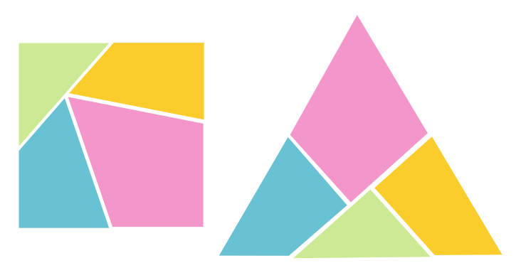

Scissors
An interactive demonstration of the Wallace–Bolyai–Gerwien theorem.
Theorem (Wallace-Bolyai-Gerwien)

Any two simple polygons of equal area can be dissected into a finite number of congruent polygonal pieces.
You:
- Draw the first polygon.
- Draw the second polygon.
We:
- Rescale the polygons so that they are of equal area.
- Triangulate the first polygon.
- Convert the triangles to rectangles.
- Fill up the second polygon.

Dima Smirnov
Zivvy Epstein
2016
2016